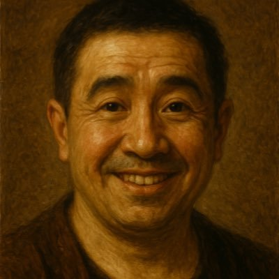

菅ちゃん
理学療法士 / 岡山
SUNABACOとの出会いは上司からの「DX勉強する？」がきっかけ。DX人材育成講座14th受講。PBLでは素敵なチームメンバーと様々な方々に支えられ、かけがえのない体験をする。
主な生息地：岡山
言語：岡山弁(北部) / 鳥取弁(少々)

好きな食べ物
肉全般
職業
理学療法士
興味・趣味
キャンプ
コーヒーを淹れること
草刈り
自己紹介クイズ
このページの内容から出題します。挑戦してみてください！